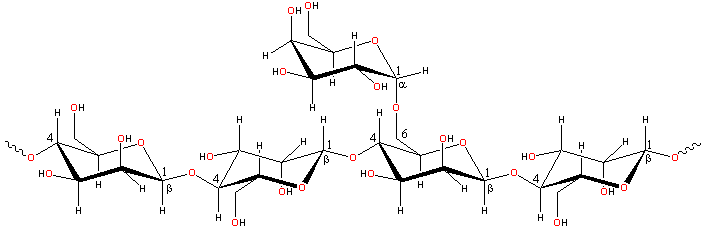

Carob tree,
by Professor Mark Wilson
Locust bean gum is similar to guar gum but less soluble and has a lower viscosity.
Locust bean gum (E410; also called Carob bean gum and Carubin) is a reserve polysaccharide (seed flour) extracted from the seed (kernels) of the carob tree (Ceratonia siliqua) [1968]. It forms a food reserve for the seeds and helps to retain water under arid conditions.
Locust bean gum is a galactomannan a similar to guar gum consisting of a (1 4)-linked β-D-mannopyranose backbone with branch points
from their 6-positions linked to α-D-galactose
(that is, 1
4)-linked β-D-mannopyranose backbone with branch points
from their 6-positions linked to α-D-galactose
(that is, 1 6-linked α-D-galactopyranose).
There are about 3.5 (2.8 - 4.9) mannose residues for every galactose
residue.
6-linked α-D-galactopyranose).
There are about 3.5 (2.8 - 4.9) mannose residues for every galactose
residue.
Locust bean gum structure

[Back to Top  ]
]
Locust bean gum is polydisperse consisting of non-ionic molecules
made up of about 2000 residues. Lower galactose substitution also
decreases the stiffness (that is, increases the flexibility)
but increases the extensibility of the isolated chains [291]. Its persistence length is less than that for guar at about 7 nm [1378].
The galactose residues prevent strong chain interactions, but there
may be up to 10 -11 unsubstituted mannose residues in a row, and
junction zones may form between such clear areas when they consist
of greater than about six residues. These nano-crystalline
links dissociate in hot water. If the galactose residues were perfectly
randomized or blocked, it is likely that each molecule would have
more than four such areas capable of acting as junction zones, so
allowing gel formation. [Back to Top  ]
]
Locust bean gum is less soluble and has lower viscosity than guar gum as it has fewer galactose branch points. It needs heating to dissolve but is soluble in hot water. Locust bean gum differs from guar gum in that it does form thermally-irreversible weak gels by the association of the galactose deficient regions and therefore has poorer freeze-thaw behavior. These unsubstituted areas also allow increased interaction with cellulose. Being non-ionic, locust bean gum is not affected by ionic strength or pH but will degrade at pH extremes at higher temperatures.
Locust bean gum specifically retards ice crystal growth by forming a structured gel at solid/liquid interfaces. This mainly occurs on freeze-thaw cycling, which encourages the galactomannan's frustrated crystallization, causing the gel to form. It promotes phase separation with skimmed milk powder showing synergistic viscosity with casein and becoming slightly thixotropic on forming a biphasic system containing casein micelles within a continuous polysaccharide network. To aid this, it may usefully be combined with xanthan [1071], with which it shows viscosity synergy and κ-carrageenan to super-helices of which it adsorbs (as do cassia a and tara gums but not guar gum) [475].
Interactive structures are available (Jmol). [Back to Top  ]
]
a Another galactomannan with lower substitution (with mannose to galactose ratio of between about 5 - 7) is cassia gum, obtained from Cassia tora (also known as Cassia obtusifolia). It has a fairly regular substitution pattern [322] but lower solubility in cold water than locust bean gum. Galactomannans may be engineered with lower substitution by the specific removal of some of their pendant galactose groups using certain α-galactosidases. [Back]
Home | Site Index | Hydrocolloids | Polysaccharide hydration | hydrogen-bonding | LSBU | Top
This page was established in 2001 and last updated by Martin Chaplin on 8 October, 2021